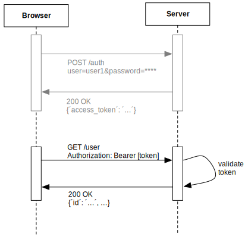
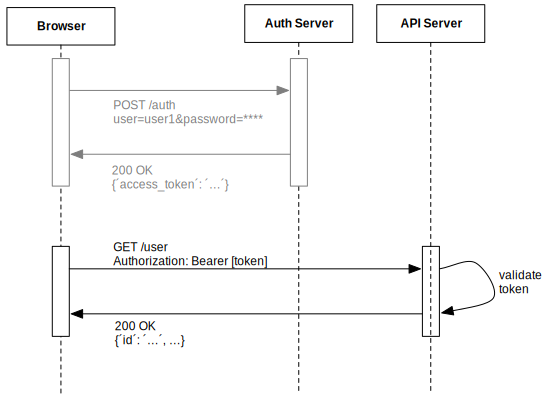
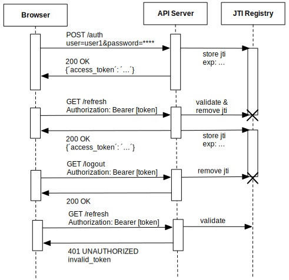

JWT
JSON web token
Christian Ranz / Munich NodeJS User Group / 13. August 2014
Server side authentication
There are two ways to perform a server side authentication.
- Cookie based authentication
- Token based authentication
Cookie based auth
Cookie based API request
Cookie Drawbacks
- hardly works Cross-Domain / CORS
- there has to be a state (session) kept on the server
→ hard to scale - lookup and deserialize sessions
→ performance issues
Token based auth
Token based API request
Token Advantages
- Cross-Domain / CORS:
The HTTP-Header can be sent to any server - stateless:
The token (in case of JWT) contains all information to identify the user - flexible:
You don't need cookie containers for mobile applications - performant:
There is no server side lookup to find the session on each request
Decoupling Services
JWT
JSON web token
"JSON Web Token (JWT) is a compact URL-safe means of representing claims to be transferred between two parties. The claims in a JWT are encoded as a JavaScript Object Notation (JSON) object that is used as the payload of a JSON Web Signature (JWS) structure or as the plaintext of a JSON Web Encryption (JWE) structure, enabling the claims to be digitally signed or MACed and/or encrypted."
JOT?!
"The suggested pronunciation of JWT is the same as the English word 'jot'."
IETF JWT
JWT Structure
<base64-encoded header>.<base64-encoded claims>.<base64-encoded signature>
JW Tokens consist of 3 base64 encoded parts separated by a "."
eyJhbGciOiJIUzI1NiIsInR5cCI6IkpXVCJ9. eyJzdWIiOjEsImV4cCI6MTQwNzgyOTI2OCwiaWF0IjoxNDA3ODIyMDY4LCJhZG1pbiI6dHJ1ZX0. JiRQIZojC6DTBM607e1fyxP0bmDSE_STuNxV-f4-7Qk
JWT Header
eyJhbGciOiJIUzI1NiIsInR5cCI6IkpXVCJ9.
{
"alg": "HS256",
"typ": "JWT"
}
- typ: e.g. "JWT" defines that the encoded Object is a JSON Web Token
- alg: e.g. "HS256" the JWT is a JWS (JSON Web Signature) and HMAC SHA-256 algorithm is used to generate the signature
The header can also contain e.g. "enc", "zip" defined in JWE (JSON Web Encryption), ...
JWT Claims
eyJzdWIiOjEsImV4cCI6MTQwNzgyOTI2OCwiaWF0IjoxNDA3ODIyMDY4LCJhZG1pbiI6dHJ1ZX0.
{
"sub": 1,
"exp": 1407829268,
"iat": 1407822068,
"admin": true
}
- iss: the issuer of the claim
- exp: the UTC Unix time the token was issued at
- iat: the UTC Unix time when the token expires
- jti: a unique identifier for the JWT
- sub: The subject of this token. e.g. the users id
There can be custom claims too. But you have to keep in mind that the token is sent to the server on each request, so ...
watch your token length!
JWT Signature
JiRQIZojC6DTBM607e1fyxP0bmDSE_STuNxV-f4-7Qk
HMACSHA256(
base64UrlEncode(header) + "." +
base64UrlEncode(payload),
"supersafe_secret"
)
A signature generated using an algorithm specified in JWA (JSON Web Algorithms)
- "HS256" HMAC using SHA-256
- "RS256" RSASSA-PKCS-v1_5 using SHA-256
- etc.
Working with JWT
Example: JWT, node.js, express.js
Invalidation and Expiry
- just remove the token from the client
- A Token blacklist
- keep expiry times short
Token Expiration

Token Invalidation
Further Reading
- IETF JWT (JSON Web Token) draft
- IETF JWS (JSON Web Signature) draft
- IETF JWA (JSON Web Algorithms) draft
- jwt.io nice overview on JWT libs and a token debugger
- express-jwt a express JWT middleware by Auth0
- node-jsonwebtoken a node JWT implementation by Auth0
- node-jwa a JSON Web Algorithms implementation by Brian J Brennan
- node-jws a JSON Web Signature implementation by Brian J Brennan
- Auth0 Blog some good articles about JWT
</end>
Questions?
by Christian Ranz